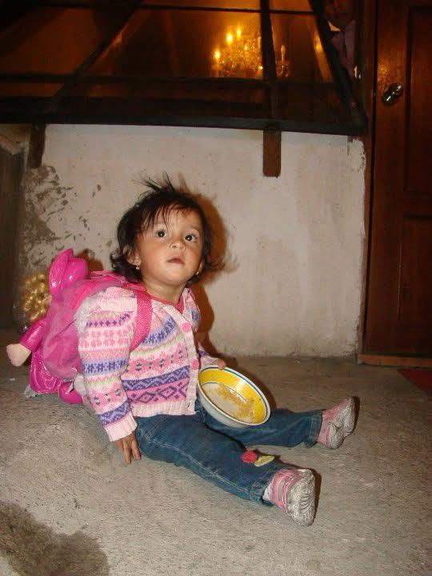
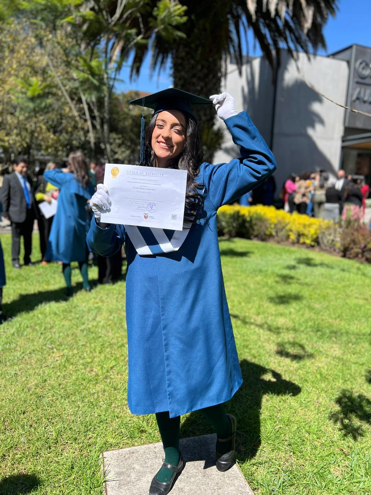
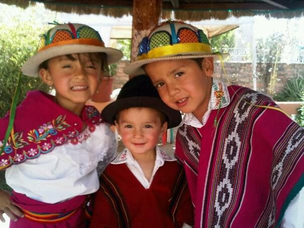

¿Who Is Chori?
From the perspective of Jessie Tacuri
Made on 06/05/2025
Purpose
I made this page with the goal of showing my future childrens what my life was like before they were born, not just through what others might tell them, also through something they could see for themselves and use to understand what my life was like, or at least how I see it from a different perspective. With nothing more to add, I hope you like it. It was made with lots of "Cariño"(Is an spanish word, do not translate it instead look for the meaning). :D
Personal Information
Birth
On May 14, 2006 at 7 am in Cuenca Ecuador, Chori came into this world with a hip disease that the doctors managed to heal, she was a very naughty baby and she was always crying, she was also her mother's first daughter
Education
He studied school and high school at the educational institution "La Asuncion", graduating in 2024, her grades were good and well here there is no more to say :/
Family Fact
Her mother is from a small province on the coast and her father is from one of the largest cities in Ecuador in the Sierra, therefore she grew up with 2 completely different types of mores, which she loves and appreciates from her childhood
